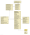

|
|||||||||
| PREV PACKAGE NEXT PACKAGE | FRAMES NO FRAMES | ||||||||
See:
Description
| Interface Summary | |
|---|---|
| ClassRenamer | Renames class names in diagram creation commands. |
| Class Summary | |
|---|---|
| CompartmentVisibility | Stores compartment visibility information for a single UML diagram. |
| DiagramCreationStepsEditor | Dialog for editing diagram creation steps. |
| UMLDiagram | UML diagram. |
| UMLDiagram.NodeInfo | Stores additional node information. |
| UMLDiagramComponent | Project component for UML diagrams. |
| UMLDiagramsPanel | Swing component that contains several uml diagrams. |
| UMLRefactoringListenerProvider | Provides access to refactoring listeners to synchronize UML diagram creation steps with rename- and move-refactorings. |
Provides core classes for UML diagrams.
This static class diagram shows the classes used for managing UML-diagrams and their relations: .
|
|||||||||
| PREV PACKAGE NEXT PACKAGE | FRAMES NO FRAMES | ||||||||